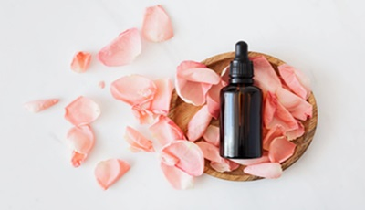

Making SkinCare ZenCare
Welcome to ZenCare, where we celebrate the beauty of healthy skin!
Our platform is dedicated to being your ultimate resource for skincare knowledge,
guidance, and inspiration. We understand that skincare is not just about beauty;
it's about self-care and self-love. Your skin is the largest organ of your body,
and it deserves the best care to look and feel its absolute best. Skincare matters
because it goes beyond aesthetics. It plays a crucial role in your overall well-being.
A proper skincare routine can help protect your skin from environmental damage, maintain
hydration, and promote a youthful complexion. At ZenCare, we're passionate about
demystifying the world of skincare. Whether you're navigating the latest skincare trends,
deciphering ingredient lists, or seeking advice on creating a personalized routine, we're
here to guide you. Our in-depth articles cover everything from the basics to advanced techniques,
ensuring that you have the knowledge to make informed decisions about your skincare journey.
Join our vibrant community of skincare enthusiasts, and let's embrace the transformative power
of skincare together. Your skin is a canvas that tells your unique story, and we're here to help
you create a radiant and confident narrative!
In our commitment to holistic skincare, we're thrilled to introduce our featured expert series,
where renowned dermatologists, estheticians, and skincare influencers share their invaluable
insights. Get ready for exclusive interviews, insider tips, and personalized advice straight from
the experts themselves. Whether you're curious about the latest in anti-aging treatments, seeking
guidance on managing specific skin concerns, or simply looking for expert recommendations, our featured
series aims to bridge the gap between professional expertise and your daily skincare routine. Stay tuned
for in-depth conversations that will empower you to make informed decisions about your skincare journey,
because we believe that everyone deserves access to expert knowledge for their best skin yet!
The Latest Scoop:
In the dynamic realm of skincare, a wave of excitement surrounds the emergence of niche ingredients, namely bakuchiol, polyhydroxy acids (PHAs), and adaptogens. Bakuchiol, a natural alternative to retinol, is gaining popularity for its gentle anti-aging prowess, delivering refined texture and enhanced collagen production. PHAs, the gentle exfoliating heroes, offer a milder option for skin renewal without the potential irritation of traditional acids. Simultaneously, adaptogens like ashwagandha and holy basil are making waves for their stress-relieving properties, calming irritated skin and promoting overall skin well-being. As these extraordinary ingredients take center stage, they signify a departure from conventional skincare, ushering in a new era of innovation and diverse approaches to achieving radiant and healthy skin. Explore the transformative potential of bakuchiol, PHAs, and adaptogens as they redefine the beauty landscape.